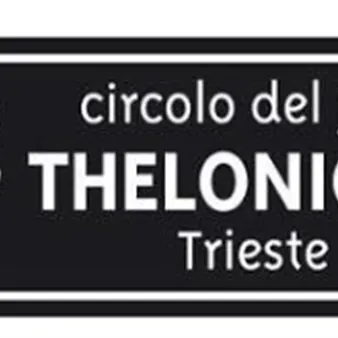

ven 11 dic · dalle 20:15
Circolo del Jazz Thelonious: Nils Wogram "Root 70"
Nils Wogram-trombone Hayden Chisholm-sax Matt Penman-controbbasso Jochen Ruckert-batteria Root 70 è un acclamato quartetto jazz guidato dal trombonista tedesco Nils Wogram. Fondato nel 2000, il gruppo si distingue nel panorama jazzistico internazionale per una longevità…
 Indicazioni
Indicazioni
- Costi e prenotazioni
- Costo non indicato · Prenotazione non indicata
- Programma
- Programma da verificare. Apri la fonte ufficiale per orari e possibili aggiornamenti.
- In caso di maltempo
- Nessuna indicazione specifica pubblicata.
- Note
- Acquisito automaticamente dalla fonte.
L’EVENTO
Descrizione completa
Nils Wogram-trombone
Hayden Chisholm-sax
Matt Penman-controbbasso
Jochen Ruckert-batteria
Root 70 è un acclamato quartetto jazz guidato dal trombonista tedesco Nils Wogram. Fondato nel 2000, il gruppo si distingue nel panorama jazzistico internazionale per una longevità straordinaria mantenendo una formazione completamente invariata per oltre vent’anni, oltre che per la scelta radicale di non includere alcuno strumento armonico (come pianoforte o chitarra).
La musica dei Root 70 è rinomata per un suono acustico trasparente, leggero e lineare. Sfruttando la totale libertà data dall’assenza del pianoforte, il quartetto spazia agilmente tra tempi dispari, jazz microtonale, forme di canzone semplici e improvvisazione libera. Le ultime produzioni (tra cui l’album The Pristine Sound of Root 70) mostrano una direzione deliberatamente “old-fashioned”, volta a privilegiare la narrazione, la semplicità e un’attitudine acustica ed espressiva che richiama i leggendari quartetti degli anni ’60. Nils Wogram, compositore, trombonista jazz e leader visionario delle sue band, percorre strade finora inesplorate. Dal 1992 al 1994 studia a New York, per poi diplomarsi come solista all’Accademia di musica di Colonia. Per i suoi numerosi e longevi progetti portati avanti con diverse band, oltre i Root 70, il Nostalgia Trio e i Vertigo Trombone Quartet, Nils Wogram dà vita a composizioni complesse su più livelli che fanno emergere e accentuano le qualità di chi suona con lui. Ad accompagnare Wogram ci sarà Hayden Chisholm, un sassofonista e polistrumentista neozelandese, che oltre che nel jazz, si esibisce pure negli ambiti della musica improvvisata e musica classica contemporanea. Il neozelandese Matt Penman è uno dei più richiesti contrabbassisti della scena jazz mondiale, già al fianco di mostri sacri come Wayne Shorter, John Scofield, Joe Lovano, Fred Hersch, Kenny Werner….. A chiudere l’organico il batterista tedesco, naturalizzato americano, Jochen Ruckert che possiamo trovare in oltre 120 dischi assieme a Pat Metheny, John Abercrombie, Marc Copland, Ron Carter, Kenny Werner…
Ingressi: 15euro, studenti 10euro, soci gratuito
Info e prenotazioni al 320 0480460 / WhatsApp / thelonious.trieste@gmail.com
IL PROGRAMMA
Programma e orari
Appuntamenti raccolti dalle fonti elencate. Dove manca un orario, non è ancora disponibile in questa scheda.
Programma pubblicato
- Dal 2026-12-11 al 2026-12-11
INFORMAZIONI UTILI
Prima di partire
- Controllare la fonte prima di partire.
ORGANIZZAZIONE